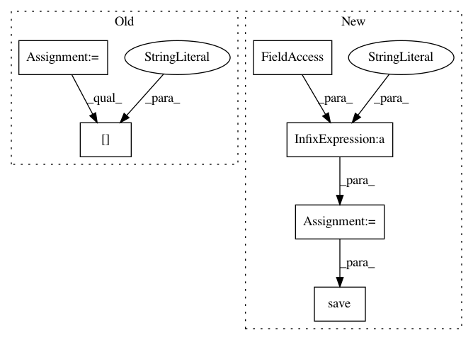

9fbc93abbbe4890b877c38082f6b73e1a32ea0e3,examples/static-batch-test.py,,,#,28
Before Change
height = int(args.size.split("x")[1])
channels = int(args.size.split("x")[2])
selector = hg.config.selector(args)
config = selector.random_config()
config_file = args.config
if args.config_list is not None:
lines = tuple(open(args.config_list, "r"))
config_file = random.choice(lines).strip()
print("config list chosen", config_file)
config_filename = os.path.expanduser("~/.hypergan/configs/"+config_file+".json")
config = selector.load_or_create_config(config_filename, config)
// TODO refactor, shared in CLI
config["dtype"]=tf.float32
config["batch_size"] = args.batch_size
if args.add_full_image:
config["add_full_image"]=args.add_full_image
After Change
config["discriminator"]=random_search.discriminator_config()
config_name="static-batch-"+str(uuid.uuid4())
config_filename = os.path.expanduser("~/.hypergan/configs/"+config_name+".json")
print("Saving config to ", config_filename)
selector.save(config_filename, config)
gan = hg.GAN(config, inputs=inputs)
gan.create()
In pattern: SUPERPATTERN
Frequency: 4
Non-data size: 6
Instances
Project Name: HyperGAN/HyperGAN
Commit Name: 9fbc93abbbe4890b877c38082f6b73e1a32ea0e3
Time: 2017-06-07
Author: mikkel@255bits.com
File Name: examples/static-batch-test.py
Class Name:
Method Name:
Project Name: HyperGAN/HyperGAN
Commit Name: 6a65e91b8303144eda83efca5f5a4d9806fba6b7
Time: 2017-06-12
Author: mikkel@255bits.com
File Name: examples/alignment-test.py
Class Name:
Method Name:
Project Name: dPys/PyNets
Commit Name: 7dc35cbcb7d12dc1dc11688f22bb0ddda393847d
Time: 2020-08-12
Author: dpisner@utexas.edu
File Name: tests/test_track.py
Class Name:
Method Name: test_track_ensemble
Project Name: dPys/PyNets
Commit Name: 7dc35cbcb7d12dc1dc11688f22bb0ddda393847d
Time: 2020-08-12
Author: dpisner@utexas.edu
File Name: tests/test_track.py
Class Name:
Method Name: test_track_ensemble_particle